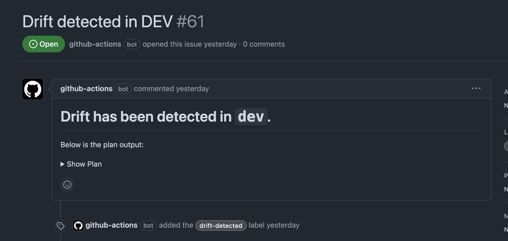

This workflow creates a GitHub Issue if drift is detected on both the dev and prod environments. Drift is when the state of your infrastructure differs from the state known by OpenTofu.
name:Tofu Drift Checkon:schedule:-cron:0 17 * * *#5pm every dayworkflow_dispatch:{}permissions:issues:writecontents:readid-token:writejobs:dev:runs-on:ubuntu-lateststeps:-name:Check Out Codeuses:actions/checkout@11bd71901bbe5b1630ceea73d27597364c9af683# v4.2.2-name:Configure OpenTofuuses:opentofu/setup-opentofu@12f4debbf681675350b6cd1f0ff8ecfbda62027b# v1.0.4-name:Print Tofu Versionrun:tofu --version-name:Get OIDC Token Filerun:|curl -s -H "Authorization: bearer $ACTIONS_ID_TOKEN_REQUEST_TOKEN" "$ACTIONS_ID_TOKEN_REQUEST_URL&audience=sts.amazonaws.com" | jq -r .value > /tmp/web-identity-token-name:Tofu Initrun:tofu init --backend-config="key=${{ github.event.repository.name }}/dev/terraform.tfstate" --var-file="dev.tfvars"working-directory:${{ github.workspace }}/tofu-name:Tofu Planid:plan-devrun:tofu plan --var-file="dev.tfvars" -no-color -detailed-exitcode -out=tfdev.planworking-directory:${{ github.workspace }}/tofu-name:Create Issue if Drift Detectedif:steps.plan-dev.outputs.exitcode == 2uses:actions/github-script@60a0d83039c74a4aee543508d2ffcb1c3799cdea# v7.0.1with:script:|const fs = require('fs');const { execSync } = require('child_process');// Get the terraform plan outputconst planOutput = execSync('tofu show -no-color tfdev.plan', {cwd: 'tofu'}).toString();const plan = planOutput.length > 65000 ? planOutput.substring(0, 65000) + " ..." : planOutput;const truncateMessage = planOutput.length > 65000 ? `> [!NOTE]\n> The plan output is too long so it has been truncated. You can view the full plan at: ${context.serverUrl}/${context.repo.owner}/${context.repo.repo}/actions/runs/${context.runId}` : "";const issueTitle = 'Drift detected in DEV';const issueBody = `# Drift has been detected in \`dev\`.\nBelow is the plan output:\n<details><summary>Show Plan</summary>\n\n\`\`\`hcl\n${plan}\n\`\`\`\n</details>\n\n${truncateMessage}`;const issues = await github.rest.issues.listForRepo({owner: context.repo.owner,repo: context.repo.repo,state: 'open',labels: 'drift-detected'});const issueExists = issues.data.some(issue => issue.title === issueTitle);if (!issueExists) {await github.rest.issues.create({owner: context.repo.owner,repo: context.repo.repo,title: issueTitle,body: issueBody,labels: ['drift-detected']});}prod:runs-on:ubuntu-lateststeps:-name:Check Out Codeuses:actions/checkout@11bd71901bbe5b1630ceea73d27597364c9af683# v4.2.2-name:Configure OpenTofuuses:opentofu/setup-opentofu@12f4debbf681675350b6cd1f0ff8ecfbda62027b# v1.0.4-name:Print Tofu Versionrun:tofu --version-name:Get OIDC Token Filerun:|curl -s -H "Authorization: bearer $ACTIONS_ID_TOKEN_REQUEST_TOKEN" "$ACTIONS_ID_TOKEN_REQUEST_URL&audience=sts.amazonaws.com" | jq -r .value > /tmp/web-identity-token-name:Tofu Initrun:tofu init --backend-config="key=${{ github.event.repository.name }}/prod/terraform.tfstate" --var-file="prod.tfvars"working-directory:${{ github.workspace }}/tofu-name:Tofu Planid:plan-prodrun:tofu plan --var-file="prod.tfvars" -no-color -detailed-exitcode -out=tfprod.planworking-directory:${{ github.workspace }}/tofu-name:Create Issue if Drift Detectedif:steps.plan-prod.outputs.exitcode == 2uses:actions/github-script@60a0d83039c74a4aee543508d2ffcb1c3799cdea# v7.0.1with:script:|const fs = require('fs');const { execSync } = require('child_process');// Get the terraform plan outputconst planOutput = execSync('tofu show -no-color tfprod.plan', {cwd: 'tofu'}).toString();const plan = planOutput.length > 65000 ? planOutput.substring(0, 65000) + " ..." : planOutput;const truncateMessage = planOutput.length > 65000 ? `> [!NOTE]\n> The plan output is too long so it has been truncated. You can view the full plan at: ${context.serverUrl}/${context.repo.owner}/${context.repo.repo}/actions/runs/${context.runId}` : "";const issueTitle = 'Drift detected in PROD';const issueBody = `# Drift has been detected in \`prod\`.\nBelow is the plan output:\n<details><summary>Show Plan</summary>\n\n\`\`\`hcl\n${plan}\n\`\`\`\n</details>\n\n${truncateMessage}`;const issues = await github.rest.issues.listForRepo({owner: context.repo.owner,repo: context.repo.repo,state: 'open',labels: 'drift-detected'});const issueExists = issues.data.some(issue => issue.title === issueTitle);if (!issueExists) {await github.rest.issues.create({owner: context.repo.owner,repo: context.repo.repo,title: issueTitle,body: issueBody,labels: ['drift-detected']});}
Configuration
This workflow runs every day at 5pm UTC time. This is configured using a cron schedule. Additionally, it uses the workflow_dispatch: {} keyword which allows the manual triggering of a workflow:
dev:runs-on:ubuntu-lateststeps:-name:Check Out Codeuses:actions/checkout@11bd71901bbe5b1630ceea73d27597364c9af683# v4.2.2-name:Configure OpenTofuuses:opentofu/setup-opentofu@12f4debbf681675350b6cd1f0ff8ecfbda62027b# v1.0.4-name:Print Tofu Versionrun:tofu --version-name:Get OIDC Token Filerun:|curl -s -H "Authorization: bearer $ACTIONS_ID_TOKEN_REQUEST_TOKEN" "$ACTIONS_ID_TOKEN_REQUEST_URL&audience=sts.amazonaws.com" | jq -r .value > /tmp/web-identity-token-name:Tofu Initrun:tofu init --backend-config="key=${{ github.event.repository.name }}/dev/terraform.tfstate" --var-file="dev.tfvars"working-directory:${{ github.workspace }}/tofu-name:Tofu Planid:plan-devrun:tofu plan --var-file="dev.tfvars" -no-color -detailed-exitcode -out=tfdev.planworking-directory:${{ github.workspace }}/tofu-name:Create Issue if Drift Detectedif:steps.plan-dev.outputs.exitcode == 2uses:actions/github-script@60a0d83039c74a4aee543508d2ffcb1c3799cdea# v7.0.1with:script:|const fs = require('fs');const { execSync } = require('child_process');// Get the terraform plan outputconst planOutput = execSync('tofu show -no-color tfdev.plan', {cwd: 'tofu'}).toString();const plan = planOutput.length > 65000 ? planOutput.substring(0, 65000) + " ..." : planOutput;const truncateMessage = planOutput.length > 65000 ? `> [!NOTE]\n> The plan output is too long so it has been truncated. You can view the full plan at: ${context.serverUrl}/${context.repo.owner}/${context.repo.repo}/actions/runs/${context.runId}` : "";const issueTitle = 'Drift detected in DEV';const issueBody = `# Drift has been detected in \`dev\`.\nBelow is the plan output:\n<details><summary>Show Plan</summary>\n\n\`\`\`hcl\n${plan}\n\`\`\`\n</details>\n\n${truncateMessage}`;const issues = await github.rest.issues.listForRepo({owner: context.repo.owner,repo: context.repo.repo,state: 'open',labels: 'drift-detected'});const issueExists = issues.data.some(issue => issue.title === issueTitle);if (!issueExists) {await github.rest.issues.create({owner: context.repo.owner,repo: context.repo.repo,title: issueTitle,body: issueBody,labels: ['drift-detected']});}
This job:
Checks out base branch
Configures/Install OpenTofu
Log the current OpenTofu version being used
This would be the latest version at the given time
Get the OIDC JWT to authenticate with AWS
Initialise OpenTofu to download the required_providers in provider.tf
Run an OpenTofu Plan
Create a GitHub Issue if drift has been detected.
You might be thinking: "how are we detecting drift?" This is using the -detailed-exitcode flag of tofu plan. The exit code changes based on certain criteria:
Quote (from opentofu.org)
Returns a detailed exit code when the command exits. When provided, this argument changes the exit codes and their meanings to provide more granular information about what the resulting plan contains:
0 = Succeeded with empty diff (no changes)
1 = Error
2 = Succeeded with non-empty diff (changes present)
As we're using the official OpenTofu action that puts a wrapper around OpenTofu, we can use the exit code output from the Action to determine if we should create an issue or not. We use 2 which indicates changes are present and therefore drift so we need to create a GitHub Issue.
You can see an example below:

Presenting the Plan and the Plan Size
I explained the rationale for this in the Tofu Plan page, but it is relevant here as well. We output a plan file using the -out parameter of the tofu plan command, then we use tofu show -no-color to present it ready for outputting in the issue. My JavaScript isn't the best, so I found a useful workflow by GitHub user: tmlye that used the execSync function in JavaScript: https://github.com/actions/runner/issues/1733#issuecomment-2447036317. Here is where I hit my second issue, which if you looked at the title of the Issue in that comment will give you a little clue... "Argument list too long".
If you have a massive plan output, which doesn't necessarily mean a mass amount of resources, but one that returns a big object, such as the data "http" "get" {} data source using the HTTP provider, you could easily hit this limit. I hit it myself when using the exact same data source to check Grafana application availability using a check block.
I found an Issue online in which people came together to come up with a good solution to this problem. You can read more here: https://github.com/actions/github-script/issues/266. In short, we need to truncate the plan output:
constfs=require('fs');const{execSync}=require('child_process');// Get the terraform plan outputconstplanOutput=execSync('tofu show -no-color tfdev.plan',{cwd:'tofu'}).toString();constplan=planOutput.length>65000?planOutput.substring(0,65000)+" ...":planOutput;consttruncateMessage=planOutput.length>65000?`> [!NOTE]\n> The plan output is too long so it has been truncated. You can view the full plan at: ${context.serverUrl}/${context.repo.owner}/${context.repo.repo}/actions/runs/${context.runId}`:"";constissueTitle='Drift detected in DEV';constissueBody=`# Drift has been detected in \`dev\`.\nBelow is the plan output:\n<details><summary>Show Plan</summary>\n\n\`\`\`hcl\n${plan}\n\`\`\`\n</details>\n\n${truncateMessage}`;
We convert the plan file into a string, and then use the substring function to take 65000 characters and append a .... If the plan file isn't more than 65000 characters long, we just use the full plan file. Using newer features in GitHub, we create a "Note" admonition to alert the user that the plan has been truncated and they can view the full plan at the link created by the issue. This uses a concatenation of multiple context variables to dynamically create it.
You may also see that we use -no-color when using tofu show. This is because the "color" output is converted to the unicode equivalent, making the plan essentially unreadable. To add this back in, we use the hcl code identifier in the code block quote. I personally prefer seeing a colour output anyway and I imagine others do too!
Lastly, we use the <details> and <summary> tags which makes the plan output collapsible in the pull request. I actually prefer this because if you have a massive plan output, it makes the PR/Issue look all cluttered - especially if multiple are ran and your original comment in not updated! You can see this in the screenshot taken above where it says > Show Plan.
These improvements have also made there way to the generic Tofu Plan reusable workflow documented here.